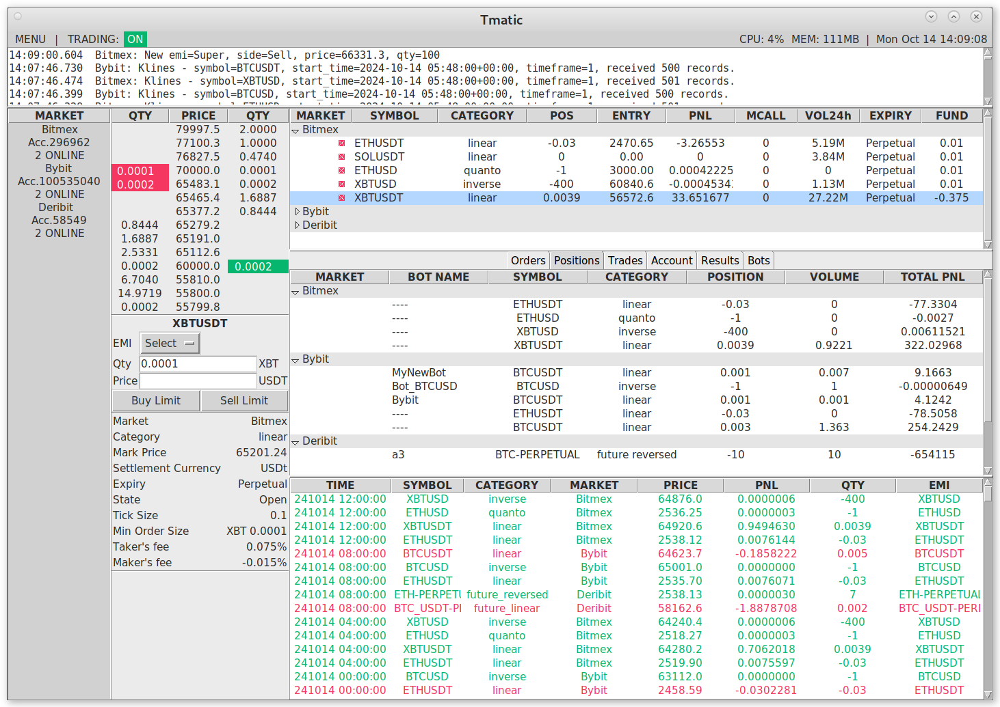
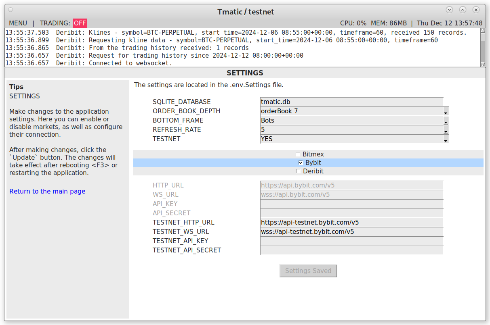
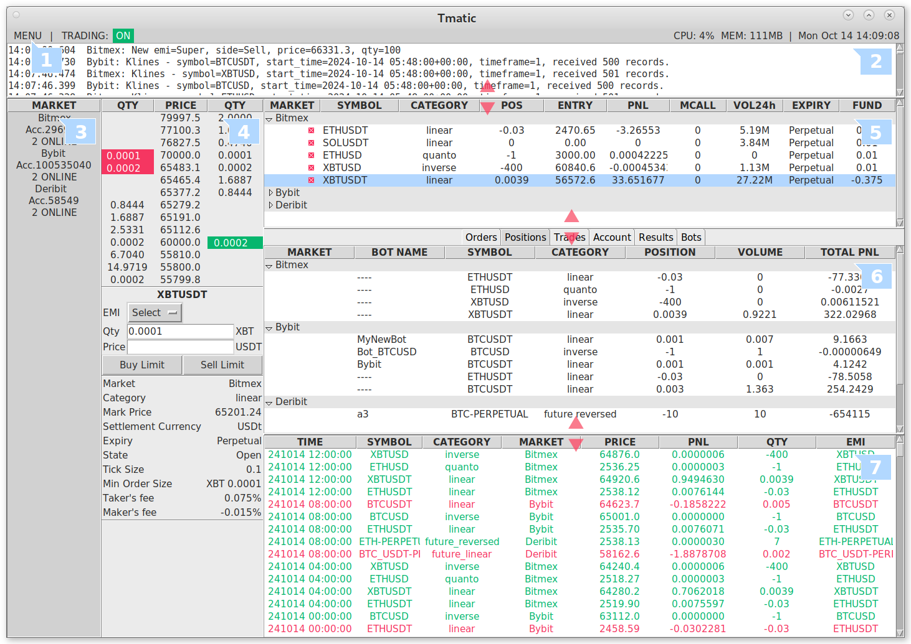
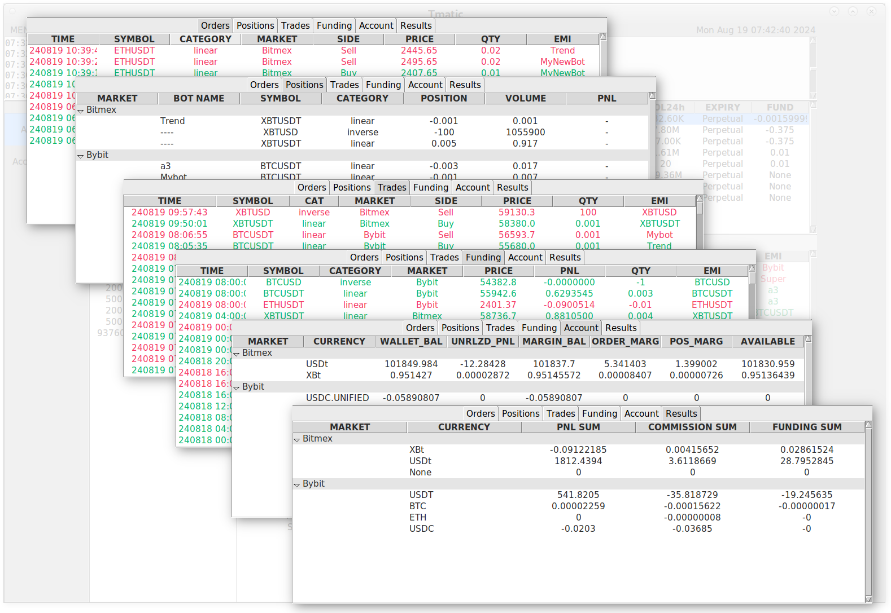
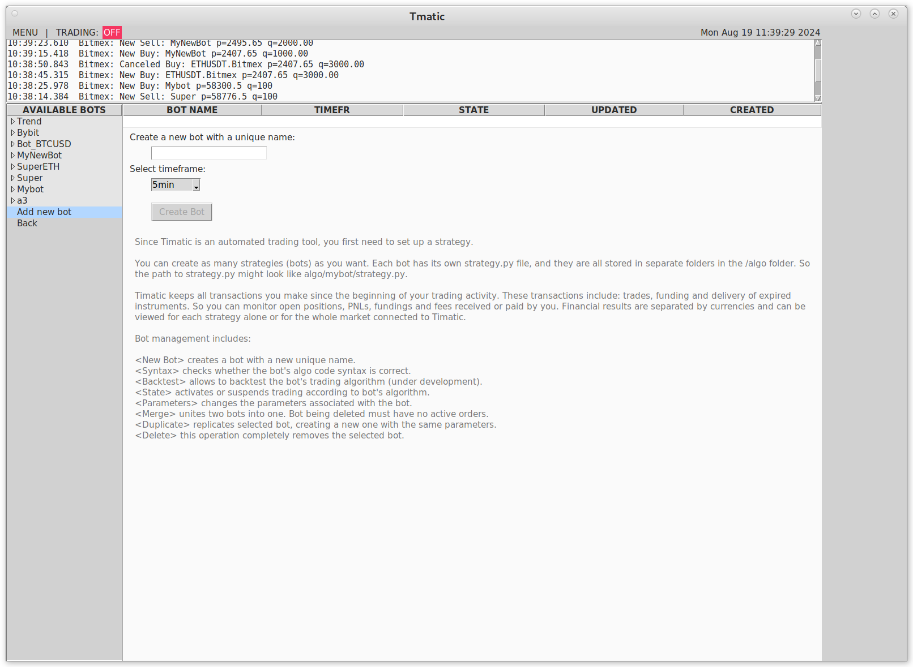
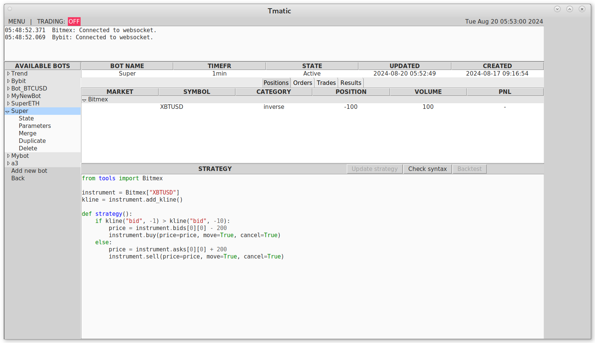
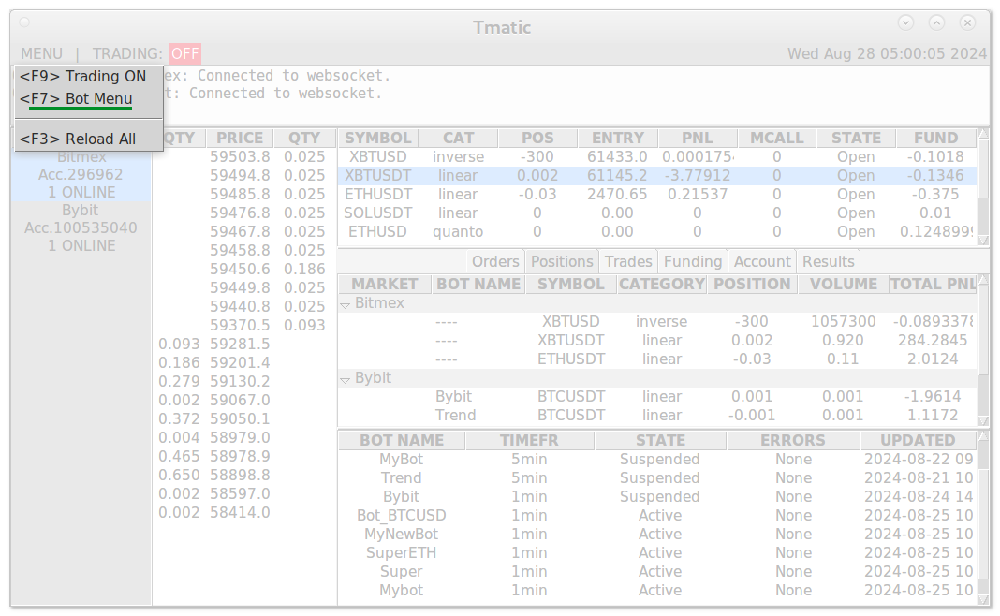
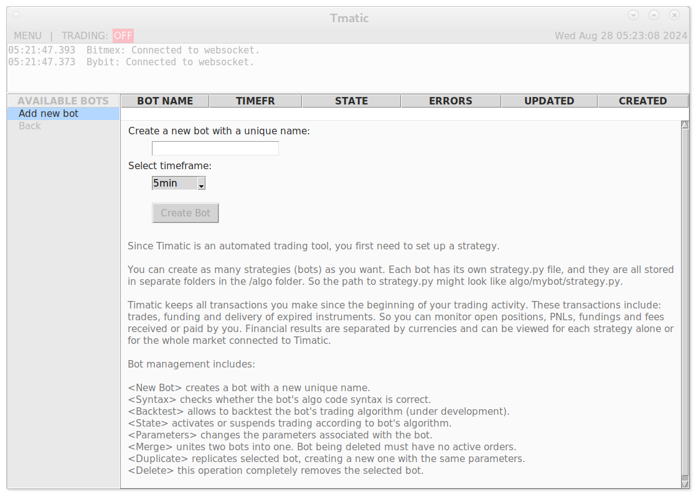
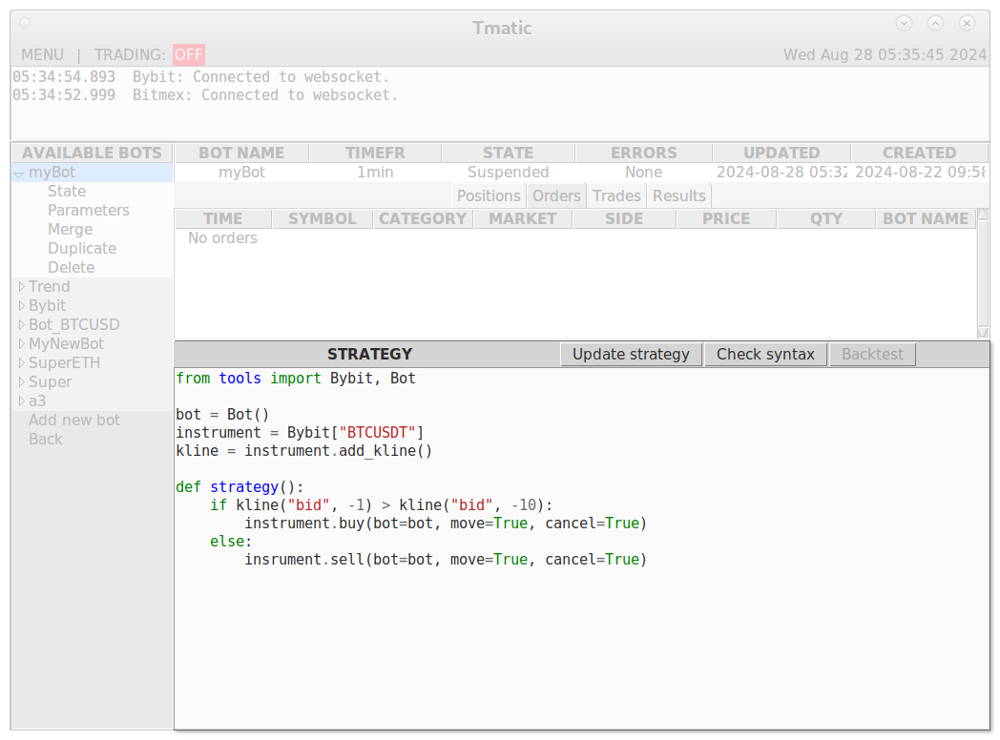
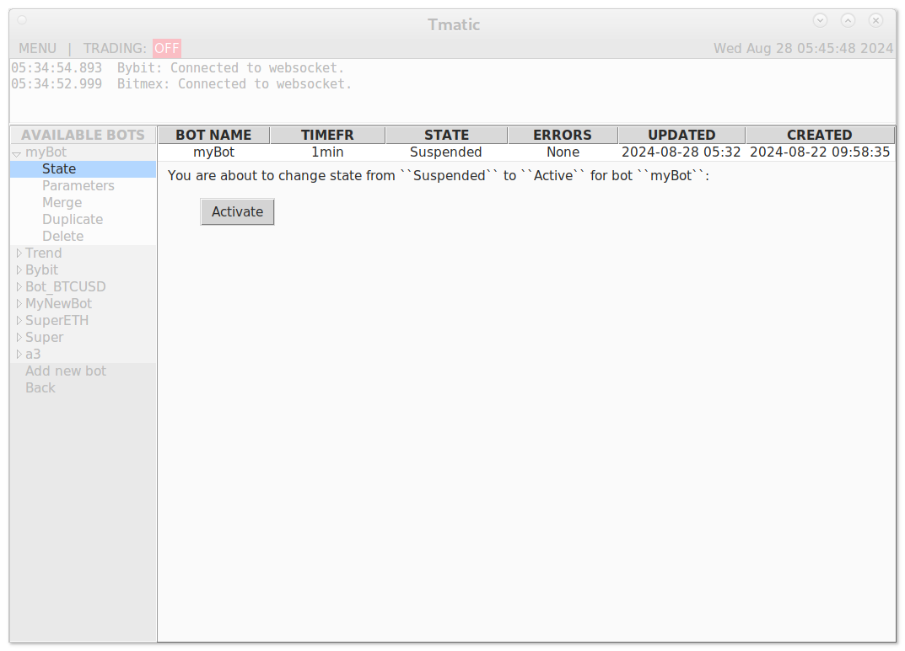

Cryptocurrency platform designed for automated trading on the Bitmex, Bybit and Deribit crypto exchanges
Visit GitHub Repo | Download ZIP Archive | Buy Me a Coffee

Working condition tested on Linux, Windows and macOS, Python 3.9+
This software is designed for trading on the Bitmex.com, Bybit.com and Deribit.com marketplaces.
API information:
| Exchange | API Overview | API Explorer | API Connector |
|---|---|---|---|
| Bitmex | bitmex.com/app/apiOverview | bitmex.com/api/explorer/ | github.com/BitMEX/api-connectors |
| Bybit | bybit-exchange.github.io/docs/v5/intro | bybit-exchange.github.io/docs/api-explorer/v5/category | github.com/bybit-exchange/pybit |
| Deribit | docs.deribit.com | www.deribit.com/api_console | - |
The software allows you to monitor trading balances and make transactions manually and automatically for Bitmex, Bybit and Deribit exchanges simultaneously.
Software Features
Automatic placement of trade orders and tracking their execution.
Monitoring of funding and open positions.
Accounting in the database of all transactions, calculation of results and funding.
Simultaneous use of any number of trading strategies for different trading instruments with separation of financial results in the database.
Bot management feature that allows you to create, delete, merge bots and track their activity.
Who is this software for
If you are a trader who is thinking about automating your strategies, this software can save you months of effort in creating an application that can interact with exchanges.
Before launch
Although the software can be used for manual trading, it is mainly intended to be used for automated one, opposite to the standard exchange trading web-interface.
You can use your local computer to run the software, but for stable 24/7 operation, it is highly recommended to use a remote server. For these purposes, it is enough to subscribe to any VPS (Virtual Private Server) with 4GB of memory and several gigabytes of free disk space after installing the operating system and the required packages. To monitor the server, you can utilize the standard capabilities provided by the VPS provider or use, for example, ssh+vncviewer tools.
Python is a cross-platform programming language, so it is suitable for Windows, Linux and macOS. It is more convenient for the server to use Linux with any current distribution at the moment, e.g. Debian 11.
Before running the program on a real account, it is strongly recommended to debug it on the testnet:
A local computer is sufficient to debug the software.
Installation on local computer
- Create a new folder and download the program there. This is not required, but it is recommended to install and activate the venv virtual environment to avoid installing Python packages globally. For example for Linux: 1) python3 -m venv venv 2) source venv/bin/activate
- Install the packages:
pip3 install pycryptodome
pip3 install python-dotenv
pip3 install websocket-client
pip3 install requests
pip3 install pygments
or use the command:
pip3 install -r requirements.txt
- The program uses an SQLite database and can work without installing a database management system. After running Tmatic for the first time, the tmatic.db file will be generated automatically. The database consists of the tables:
real_trade- stores all previously executed transactions and accrued funding.test_trade- stores all previously executed transactions and accrued funding in the test network.robots- parameters of trading bots.expired- parameters of expired instruments that were previously traded. When restoring the trading history and an expired instrument is found, Tmatic first checks the instrument parameters in theexpiredtable. If the instrument is not found, it gets the information from the exchange endpoint and stores it in theexpiredtable to speed up the loading process in the future.
The columns of the real_trade and test_trade tables are identical.
The real_trade (test_trade) table receives data from the websocket execution stream or trade history endpoint. Explanations for the columns:
- ID - row number in the database.
- EXECID - unique code that exchange assigns to any transaction.
- EMI is the identification name of the bot taken from the "clOrdID" field. EMI usually corresponds to the EMI field of the SQLite "robots" table.
| execution | myBot is in the "robots" table | EMI |
|---|---|---|
| {"clOrdID": "1109594183.myBot", "symbol": "XBTUSD"} | yes | myBot |
| {"clOrdID": "", "symbol": "XBTUSD"} | - | XBTUSD |
| {"clOrdID": "1109594183.myBot", "symbol": "XBTUSD"} | no | XBTUSD |
- REFER - the EMI part of the "clOrdID" field. E.g. REFER = "myBot" for
{"clOrdID": "1109594183.myBot"}. If the exchange closes an open position after the instrument expires, in this case the REFER field takes the value "". - MARKET - name of the exchange.
- CURRENCY - currency of a transaction or funding.
- TICKER - instrument symbol as presented in the exchange API.
- SYMBOL - almost the same as TICKER, with exception of the spot category, where SYMBOL looks like "instrument baseCoin / instrument quoteCoin", example "BTC/USDT".
- CATEGORY - instrument category. Possible values depend on the specific exchange. Example: "linear", "inverse", "quanto", "spot", "option", etc.
- SIDE - side of a transaction: "Buy", "Sell", "Fund" (funding).
- QTY - transaction volume.
- QTY_REST - rest of transaction volume after partial execution.
- PRICE - order price.
- THEOR_PRICE - target price.
- TRADE_PRICE - transaction price or estimated funding price. The transaction price may be better or worse than PRICE.
- SUMREAL - execution value, which is expressed in the currency of the transaction instrument and is calculated in accordance with the documentation of the exchange for each instrument.
- COMMISS - funding amount or commission for completing a transaction, expressed in the currency of the instrument, and is calculated in accordance with the documentation of the exchange for each instrument. A negative value means a rebate.
- TTIME - transaction time received from the exchange.
- DAT - time the current row was written into the database.
- CLORDID - unique order identifier assigned by Tmatic corresponding to the "clOrdID" field, which the exchange registers as an additional parameter when sending an order. For example, clOrdID = "1109594183.myBot" where 1109594183 is a unique order number assigned by Tmatic, "myBot" after the dot is the bot name (EMI). When writing "clOrdID" to the SQLite
real_trade(test_trade) table it is split and in this case "myBot" is written to the EMI column and 1109594183 is written to the CLORDID column. An order can be executed in parts, and by receiving information from the exchange using "clOrdID" you can understand which order is being executed and which bot placed it. The "clOrdID" field can be 0. This means that it was funding or the order was made from outside this platform where "clOrdID" was not used. If the exchange closes an open position after the instrument expires, in this case the REFER field takes the value "Delivery". - MARKET - name of the exchange.
- ACCOUNT - user's exchange account number.
Explanations for the columns of the SQLite robots table:
- EMI - bot identity name.
- SORT - allows you to do your own sorting when reading from the database.
- DAT - time the current row was written to the database.
- TIMEFR - timeframe that the bot uses. Possible values at the moment: "1min", "5min", "1h".
- STATE - Possible values: "Suspended" or "Active".
- UPDATED - update time for bot parameters or strategy.py file.
Columns of the expired table:
- ID - row number in the database.
- SYMBOL - almost the same as TICKER, with exception of the spot category, where SYMBOL looks like "instrument baseCoin / instrument quoteCoin", example "BTC/USDT".
- MARKET - name of the exchange.
- CURRENCY - currency of a transaction or funding.
- TICKER - instrument symbol as presented in the exchange API.
- CATEGORY - instrument category. Possible values depend on the specific exchange.
- MYMULTIPLIER - for Bitmex only. Converts quantity when displayed on screen. For other exchanges it is equal to 1.
- MULTIPLIER - for Bitmex only. How much is one contract worth. You can see this information under the Bitmex Contract Specifications for each instrument. For other exchanges it is equal to 1.
- TICKSIZE - the step to increase/reduce order price.
- PRICE_PRECISION - based on the
tickSizeof the instrument. Used to round prices when displayed on the screen. - MINORDERQTY - minimum order quantity or lotsize.
- QTYSTEP - the step to increase/reduce order quantity. Also called LotSize.
- PRECISION - based on the
lotSizeof the instrument. Used to round volumes when displayed on the screen. - EXPIRE - expiration time.
- BASECOIN - base coin.
- QUOTECOIN - quote coin.
- VALUEOFONECONTRACT - for Bitmex only. Used when calculating trade value. For other exchanges it is equal to 1.
- TAKERFEE - taker's commission for instrument.
- MAKERFEE - maker's commission for instrument.
- DAT - time the current row was written into the database.
Launch the program
It is recommended to debug the program on the test network first.
Once you have downloaded the program and installed the necessary packages listed above, you can simply run Tmatic using the terminal in the folder where you downloaded the program:
Launch the program:
- in Linux or macOS terminal
python3 main.py - in Windows command prompt (cmd.exe)
python main.py
If you don’t have API credentials set up, you’ll be redirected to the settings page.

Follow the Tmatic setup instructions and add your API keys and secret. If you don’t have them, here are a few places you can get them for the testnet environment:
| exchange | url |
|---|---|
| Bitmex | testnet.bitmex.com/app/apiKeys |
| Bybit | testnet.bybit.com/app/user/api-management |
| Deribit | test.deribit.com/account/BTC/API |
The settings are stored in two files: .env.Settings and .env.Subscriptions. By default, they look like like this:
.env.Settings
MARKET_LIST='Bitmex,Bybit,Deribit'
SQLITE_DATABASE='tmatic.db'
ORDER_BOOK_DEPTH='orderBook 7'
BOTTOM_FRAME='robots'
REFRESH_RATE='5'
TESTNET='YES'
#
Bitmex_CONNECTED='YES'
Bitmex_HTTP_URL='https://www.bitmex.com/api/v1'
Bitmex_WS_URL='wss://ws.bitmex.com/realtime'
Bitmex_API_KEY=''
Bitmex_API_SECRET=''
Bitmex_TESTNET_HTTP_URL='https://testnet.bitmex.com/api/v1'
Bitmex_TESTNET_WS_URL='wss://testnet.bitmex.com/realtime'
Bitmex_TESTNET_API_KEY=''
Bitmex_TESTNET_API_SECRET=''
#
Bybit_CONNECTED='YES'
Bybit_HTTP_URL='https://api.bybit.com/v5'
Bybit_WS_URL='wss://api.bybit.com/v5'
Bybit_API_KEY=''
Bybit_API_SECRET=''
Bybit_TESTNET_HTTP_URL='https://api-testnet.bybit.com/v5'
Bybit_TESTNET_WS_URL='wss://api-testnet.bybit.com/v5'
Bybit_TESTNET_API_KEY=''
Bybit_TESTNET_API_SECRET=''
#
Deribit_CONNECTED='YES'
Deribit_HTTP_URL='https://www.deribit.com'
Deribit_WS_URL='wss://www.deribit.com/ws'
Deribit_API_KEY=''
Deribit_API_SECRET=''
Deribit_TESTNET_HTTP_URL='https://test.deribit.com'
Deribit_TESTNET_WS_URL='wss://test.deribit.com/ws'
Deribit_TESTNET_API_KEY=''
Deribit_TESTNET_API_SECRET=''
MARKET_LIST currently supports Bitmex, Bybit, and Deribit, sorted by how they appear in the app.
SQLITE_DATABASE — the name of the database.
ORDER_BOOK_DEPTH is a choice between "orderBook" which allows you to see the order book two to ten lines deep, and "quote" which shows only the best buy and sell while significantly reducing network traffic.
BOTTOM_FRAME — selects your preferred table from Orders, Positions, Trades, Funding, Account, Results and Robots, which will always be visible at the bottom of the main page.
REFRESH_RATE — determines how often the information on the screen is refreshed, from 1 to 10 times per second.
TESTNET — "YES" activates the test network.
CONNECTED — "YES" means that the exchange must be connected.
HTTP_URL — the exchange's http network.
WS_URL — the exchange's web socket network.
API_KEY — the API key received from the exchange.
API_SECRET — the secret code received from the exchange.
The next four parameters have the same meanings, but are related to the test network.
.env.Subscriptions
Bitmex_SYMBOLS='XBTUSDT'
Bybit_SYMBOLS='BTCUSDT'
Deribit_SYMBOLS='BTC-PERPETUAL'
- SYMBOLS — a list of instruments to which the web socket subscription will be made.
[!NOTE] Currently, you can update the settings via the app settings menu, but adding new instruments to the subscription list must be done manually in the .env.Subscriptions file. The list should be comma-separated and may look like this:
Bitmex_SYMBOLS="XBTUSDT, ETHUSD, XBTUSD". While the app is loading and unclosed positions or open orders are found for a particular instrument, that instrument will also be automatically subscribed to.
Troubleshooting
If the program does not start or a warning or error appears, check the logfile.log file or the information widget at the top for errors.
| Error or warning | Description |
|---|---|
| This request has expired | 1. Bad internet connection. 2. Your computer's system time may be out of sync. If your OS is Windows you should check the “Date and Time” settings: in the “Synchronize clocks” section, you must click the “Sync now” button. |
| Invalid request, please check your server timestamp | |
| Resync your system time | |
| Empty trading history | This warning may appear when a trade history was requested, the answer was correct, but it was an empty list. The warning may appear: 1. You have a new account and there is no previous trading activity. 2. Normally after loading the trading history, the history.ini file contains the time of the last transaction. When you restart Tmatic, you receive this transaction from the exchange again, and the response is not empty. If you manually changed the entry in histori.ini to a time later than the time of the last transaction, this warning appears. |
| SSL: CERTIFICATE_VERIFY_FAILED | This may occur for Windows users. There is probably a problem with the certifi module. This error occurs when the server you are trying to connect to has renewed the SSL certificate, but the certifi module cannot find it in its database. Solution: For example, you are trying to connect to Bybit testnet. 1. Get the http address from the .env.Settings file https://api-testnet.bybit.com/v5 2. Open the page in your internet browser, such as Google Chrome. 3. Click the "View site information" button, which is located before the address bar. 4. Click the link with the lock icon "Show connection details". 5. Click the last line "Show certificate". 6. In the window that opens, click the second tab "Details", then click "Export" in the lower right corner. Save the certificate by selecting the file type as a certificate chain. 7. In the folder where Tmatic is installed, run the script: import certifi print(certifi.where()) This will give you the path to the cacert.pem file. Open the file with the certificate that you downloaded from the browser and copy all the lines from it to the end of the cacert.pem file. |
| ImportError: No module named 'tkinter' | For Python 3, tkinter should already be included in your Python installation. However, if it is not available, you can install it in the terminal or command prompt as described below: Linux Debian based distros: sudo apt-get install python3-tk RPM based distros: sudo yum install python3-tkinter MacOS brew install python-tk Windows Download the latest Python version from python.org. During installation, ensure the “Tcl/Tk and IDLE” option is selected. |
Trade History
Tmatic stores all your trading activity, including information on trades, financing and deliveries. Manage the history.ini file to set the date from which the history should be loaded. After that, the date of the last transaction is saved. You can reset the date in history.ini at any time you need. Each record in the database is unique, and no trade can be written to the database twice.
Check the history.ini file which keeps the date and time of the last transaction in the format: year-month-day hours:minutes:seconds (example 2023-12-08 12:53:36). You can use any date and time depending on your needs. For instance, if you want to be guaranteed to download all the transactions that were made on your current account, simply specify the year, e.g. 2000, any month, day and time. Thus, the program will download all transactions for your account starting from the very beginning. Transactions and funding will be recorded to the database in the SQLite real_trade (test_trade) table.
[!NOTE] Please keep in mind that Bitmex has removed trade history prior to 2020 for testnet.bitmex.com test accounts, so if your trading activity on testnet.bitmex.com was prior to 2020, you will not be able to get your entire trade history. Bybit only supports the last two years of trading history. Its API allows trading history to be downloaded in 7-day chunks, so retrieving data for a long period may take time.
How it works
Once the program is running, you can submit buy and sell orders by clicking on the order book, then cancel or move orders. However, the point of the program is the possibility of automatic trading around the clock in accordance with the established algorithms. You can use different algorithms for the same financial instrument, distributing balances and financial results separately for each algorithm or, to put it another way, for each bot. This feature is implemented in the program through the key parameter EMI, which is the bot’s identity name. When you submit an order through the program, you pass the "clOrdID" field to the exchange, which contains the bot's EMI. Thus, after the order is executed, when you receive the transaction parameters, there will also be a "clOrdID" field from which the program finds out the order number of your internal accounting and the bot’s EMI. Consequently, the program will calculate the financial result of a particular bot, its balance and make an entry into the database. Having the entire register of transactions in the database, each time after switching on, the program can correctly recalculate the balances for each bot.
EMI can be equal to the instrument symbol as the default name, for example, if you made a trade from the exchange web interface. In this case, the EMI may look, for example, like "XBTUSD". When the program processes data from the execution stream or trade history endpoint and does not find a correspondence between the EMI from the "clOrdID" field and the field in the SQLite "robots" table, in this case the EMI may also be equal to the instrument symbol.
[!IMPORTANT] Deribit only provides the clOrdID (the "label" in the Deribit API) for the last 5 days, so when restoring earlier trades from the trading history, there is no way to identify the bot name. Therefore, these trades will be stored in the database with the default EMI assigned with the instrument symbol.
What happens if you place an order from the standard exchange trading web interface? You will see this order in the program with EMI equal to the instrument symbol, but only if you are subscribed to a specific instrument in the .env.<exchange> file. You will be able to cancel or move this order.
Program controls

Use the Menu to activate the auto trading mode, or go to the Bot menu, or the Settings menu, or restart the program.
The information widget displays all trading operations and various useful information during the program operation, including errors if they occur.
The Instruments menu allows you to subscribe to available instruments to receive live market data. The menu separates instruments by category and currency. It also displays the connection status, account number, and the number of times the exchange has been rebooted due to poor connection or other reasons. Once you subscribe to an instrument, it appears in section 5.
[!NOTE] Options are subscribed to in series for all available call and put strikes. For each option, a subscription is made to the orderbook and ticker websocket streams. Therefore, it should be noted that subscribing to only one option series can cause a hundred or more streams at the same time, which in turn will cause a large network load. After subscribing to an option series, the option selection is made through the Option Chain.
You can use the order book area to place a new order. You can place an order for all available bots. Moreover, an order can be placed for a specific instrument that does not belong to any bot.
Click on the instrument area to switch the order book to another instrument.
You can choose between information blocks related to your trading activity, accounts and trading results.

- To cancel or move an order, click on the desired order in the Orders table.
- Any information block (Orders, Positions, Trades, Account, Results, Bots) from sector 6 can be placed in sector 7 and made always visible. To do this, configure the menu Settings >> BOTTOM_FRAME.
Bot menu
The Bot Menu simplifies the management of bots using the GUI. The functions available in the Bot Menu:
- Add a new bot.
- Update bot's state: "Active" or "Suspended".
- Edit bot's parameters.
- Merge two bots.
- Duplicate bot.
- Delete bot.
- View and edit bot's strategy.
- Check the strategy syntax.
- View bot activity, including:
- Open orders
- Positions
- Trades
- Profit/Loss for each position
- Total results, split by currency
Add a new bot

Currently bots can only trade on timeframes, so timeframe is the only parameter that needs to be selected. Each new bot will have its own folder in the algo folder, where the strategy.py file with the bot code is placed. To manage the bot parameters, as well as to delete the bot, use the menu on the left.
Once the bot is created, a page with current parameters will open as shown below.

Add trading algorithm
Selecting an instrument
Once you've added a new bot, you can edit strategy.py using the Tmatic interface or, more conveniently, using an IDE like PyCharm or Visual Studio code, whichever you prefer.
The functionality for the bot is in the tools.py module, so first you need to import market from that module, for example:
from tools import Bybit
Now you can access any Bybit instrument, such as the BTCUSDT perpetual contract:
instrument = Bybit["BTCUSDT"]
Bybit["BTCUSDT"] is a class whose full list of attributes are described below:
class Instrument:
"""
Stores data for each instrument.
Parameters
-----------
asks: list
Asks. The elements are sorted by price in ascending order. There can
only be one element if the ORDER_BOOK_DEPTH in the .env file is
defined as ``quote``.
avgEntryPrice: float
Average entry price
baseCoin: str
Base coin
bids: list
Bids. The element is sorted by price in descending order. There can
only be one element if the ORDER_BOOK_DEPTH in the .env file is
defined as ``quote``.
category: str
Possible instrument categories depend on the specific exchange.
currentQty: float
Position size
expire: datetime
Expiration time.
fundingRate: float
Funding rate.
marginCallPrice: float
Position margin call or liquidation price.
market: str
Exchange name.
markPrice: float
Defines mark price for the instrument.
maxOrderQty: float
Not used
minOrderQty: float
Minimum order quantity or lotsize
multiplier: int
:::For Bitmex only::: How much is one contract worth? You can see
this information under the Bitmex Contract Specifications for each
instrument. For other exchanges it is equal to 1.
myMultiplier: int
:::For Bitmex only::: Converts quantity when displayed on screen. For
other exchanges it is equal to 1.
precision: int
Based on the ``lotSize`` of the instrument. Used to round volumes
when displayed on the screen. For other exchanges it is equal to 1.
price_precision: int
Based on the ``tickSize`` of the instrument. Used to round prices
when displayed on the screen.
qtyStep: float
The step to increase/reduce order quantity. Also called LotSize.
quoteCoin: str
Quote coin.
settlCurrency: tuple
Settlement currency of the instrument.
state: str
Instrument status. Normally "Open".
sumreal: float
Accumulated trading value.
symbol: str
A unique value corresponding to the ticker, except in the spot
category, where the symbol matches ``baseCoin``/``quoteCoin``.
ticker: str
Symbol of the instrument in the exchange classification.
tickSize: float
The step to increase/reduce order price.
unrealisedPnl: float
Unrealised PnL.
volume: float
The total trading volume on a given account.
volume24h: float
Volume for 24h
valueOfOneContract: float
:::For Bitmex only::: Used when calculating trade value. For other
exchanges it is equal to 1.
"""
So, for example, to print a list of all asks in the order book for the given instrument BTCUSD, enter:
print(instrument.asks)
Or you can enter it in such a way that the result will be the same:
print(Bybit["BTCUSDT"].asks)
One bot can use multiple markets and instruments connected to Tmatic. For example, if you want BTCUSDT from Bybit and a similar instrument XBTUSDT from Bitmex, just import both markets in the strategy.py file.
from tools import Bybit, Bitmex
print(Bybit["BTCUSDT"].asks)
print(Bitmex["XBTUSDT"].asks)
[!IMPORTANT] To access the asks data of the Bybit
BTCUSDTinstrument, you must be subscribed to this instrument in the.env.Bybitfile in theSYMBOLSfield. The same applies to BitmexXBTUSDT. The order book data is updated via a websocket, so a subscription is required. However, to get a value such asqtyStep, a subscription is not required. Such values are preloaded for all available instruments after the program is launched.
Adding kline (candlestick) data to the instrument
Initialization
Exchanges support thousands of instruments. Downloading kline data and then updating it for all instruments will take a lot of resources, so Tmatic will only download the data that the trader specifies in his strategy.py files.
To get kline data for an instrument, use the add_kline() method. For example, add to your strategy.py file:
import Bitmex
kline = Bitmex["XBTUSDT"].add_kline()
Click Update strategy if you are in the Bot menu. Tmatic will make a request to the exchange and load the data into memory in the number of lines according to CANDLESTICK_NUMBER in the botinit/variables.py file. Then the data will be accumulated from the websocket, so in this case, a subscription to XBTUSDT in .env.Bitmex is required.
While Bitmex["XBTUSDT"].add_kline() is present in the strategy.py file, when Tmatic is launched or a specific exchange is restarted while Tmatic is running, the kline data will also be reloaded.
The add_kline method can take one argument timefr. Possible values: "1min", "2min", "3min", "5min", "10min", "15min", "20min", "30min", "1h", "2h", "3h", "4h", "6h", "12h", "1D". If omited, the timefr is specified in the bot parameters.
Get access to data
Each line of kline data is a dictionary:
"date": int
date yymmdd, example 240814
"time": int
time hhmmss, example 143200
"open_bid": float
first bid price at the beginning of the period
"open_ask": float
first ask price at the beginning of the period
"hi": float
highest price of the period
"lo": float
lowest price of the period
"funding": float
funding rate for perpetual instruments
"datetime": datetime
date and time in datetime format
The Bitmex["XBTUSDT"].add_kline() expression returns a callable object that can take one argument.
kline = Bitmex["XBTUSDT"].add_kline()
kline(-1)
A value of -1 returns data for the most recent period, -2 for the period before the most recent, and so on.
{
"date": 240820,
"time": 134500,
"open_bid": 63259.5,
"open_ask": 63260.0,
"hi": 63260.0,
"lo": 63259.5,
"funding": -0.11806,
"datetime": datetime.datetime(
2024, 8, 20, 13, 45, tzinfo=datetime.timezone.utc
),
}
[!NOTE] All data refers to the timeframe (timefr) specified in the bot parameters.
Buying and Selling instructions
Timatic has only one order type - limit. If a buy order is placed above the best ask price, the trade will be executed for this ask price. The same applies to sell orders.
Buy and sell orders are methods that can be called for any instrument from such classes as Bitmex or Bybit of the tools module. For more details, see Selecting an instrument above.
The syntax is as follows:
from tools import Bitmex, Bot
bot = Bot()
Bitmex["XBTUSDT"].sell(bot=bot)
or
Bitmex["XBTUSDT"].buy(bot=bot)
"""
Parameters
----------
bot: Bot
An instance of a bot in the Bot class.
qty: float
Order quantity. If qty is omitted, then: qty is taken as minOrderQty.
price: float
Order price. If price is omitted, then price is taken as the current
first offer in the order book.
move: bool
Checks for open sell orders for the current instrument for this bot and
if there are any, takes the last order and moves it to the new price. If
not, places a new order.
cancel: bool
If True, cancels all buy orders for the current instrument for this bot.
Returns
-------
str | None
If successful, the clOrdID of this order is returned, otherwise None.
"""
The parameters of the sell order are described above. All parameters except bot are optional and can be omitted.
[!NOTE] The parameters of the buy order are the same, except that the price defaults to the first bid in the order book, the method moves the last buy order and cancels all sell orders accordingly.
Examples:
import Bitmex, Bot
bot = Bot()
Bitmex["XBTUSD"].sell(bot=bot)
Sends a sell order, qty of XBTUSD minOrderQty is 100, price is equal to the first ask in the order book.
Bitmex["XBTUSD"].sell(bot=bot, qty=200)
Sends a sell order, qty is 200, price is equal to the first ask in the order book.
Bitmex["XBTUSD"].buy(bot=bot, qty=200, move=True)
Sends a buy order, qty is 200, price is equal to the first bid in the order book. Checks for open buy orders on XBTUSD for this bot and if there are any, takes the last order and moves it to the new price. If not, places a new order.
Bitmex["XBTUSD"].buy(bot=bot, qty=200, price=50000, move=True)
Sends a buy order, qty is 200, price is 50000. Checks for open buy orders on XBTUSD for this bot and if there are any, takes the last order and moves it to the new price. If not, places a new order.
Bitmex["XBTUSD"].buy(bot=bot, qty=200, price=50000, move=True, cancel=True)
Sends a buy order, qty is 200, price is 50000. Checks for open buy orders on XBTUSD for this bot and if there are any, takes the last order and moves it to the new price. If not, places a new order. Cancels all sell orders for the XBTUSD for this bot.
Limits control
When an order is submitted, Tmatic does not allow the bot to exceed the set limit for the instrument. It decreases quantity if the limit is exceeded. If the limit is completely exhausted, the order will not be sent to the exchange. If the bot does not have a position for this instrument, then such a position will be added to the bot, and the limit is set as default equal to minOrderQty of the instrument.
Examples:
Let's say the bot is trading BTCUSDT on Bybit. minOrderQty for BTCUSDT is 0.001. The table below shows possible scenarios:
| Current position | Limit | Side | Qty | Result |
|---|---|---|---|---|
| None | None | Buy | 0.001 | The limit is set to 0.001. Buy order sent, qty = 0.001 |
| None | None | Buy | 0.002 | The limit is set to 0.001. Buy order sent, qty = 0.001 |
| 0.001 | 0.001 | Buy | 0.001 | Nothing happens. Buy order ignored |
| -0.001 | 0.001 | Buy | 0.002 | Buy order sent, qty = 0.002 |
| -0.001 | 0.002 | Buy | 0.005 | Buy order sent, qty = 0.003 |
| 0.002 | 0.002 | Sell | 0.005 | Sell order sent, qty = 0.004 |
| -0.001 | 0.002 | Sell | 0.005 | Sell order sent, qty = 0.001 |
Setting limits
Use set_limit() method to specify the position limits that the bot is allowed to trade on the instrument.
"""
Parameters
----------
bot: Bot
An instance of a bot in the Bot class.
limit: float
The limit of positions the bot is allowed to trade on this instrument.
If this parameter is less than the instrument's minOrderQty, it
becomes minOrderQty.
"""
Example:
import Bitmex, Bot
bot = Bot()
Bitmex["XBTUSDT"].set_limit(bot=bot, limit=0.003)
Get limit
Use limit() method to get bot limit on the instrument.
"""
Parameters
----------
bot: Bot
An instance of a bot in the Bot class.
Returns
-------
float
Bot position limit for the instrument.
"""
Example:
import Bitmex, Bot
bot = Bot()
print(Bitmex["XBTUSDT"].limit(bot=bot))
Result:
0.001
Get position
Use position() method to get the bot position for the given instrument.
"""
Parameters
----------
bot: Bot
An instance of a bot in the Bot class.
Returns
-------
float
The bot position value for the instrument.
"""
Example:
import Bitmex, Bot
bot = Bot()
print(Bitmex["XBTUSDT"].position(bot=bot))
Result:
0.001
Get bot's orders for the instrument
Use the orders() method to get the current open orders for a given instrument. If necessary, filter the orders by sell or buy side and sort them in descending order. Set the in_list parameter to return the result in a list or OrderedDict format.
"""
Parameters
----------
bot: Bot
An instance of a bot in the Bot class.
side: str
The Sell or Buy side of the order. If the parameter is omitted,
both sides are returned.
descend: bool
If omitted, the data is sorted in ascending order by the value of
``transactTime``. If True, descending order is returned.
in_list: bool
If True, the data is returned in a list, otherwise an OrderedDict
is returned where the key is clOrdID.
Returns
-------
OrderedDict | list
Orders are sorted by ``transactTime`` in the order specified in
the descend parameter. The OrderedDict key is the clOrdID value.
"""
Example:
import Bitmex, Bot
bot = Bot()
print(Bitmex["XBTUSDT"].orders(bot=bot, side="Buy", in_list=False))
Result:
OrderedDict(
[
(
"1332492130.Mybot",
{
"emi": "Mybot",
"leavesQty": 0.001,
"transactTime": datetime.datetime(
2024, 8, 21, 14, 7, 49, 485000,
tzinfo=datetime.timezone.utc
),
"price": 40000,
"symbol": ("XBTUSDT", "Bitmex"),
"category": "linear",
"market": "Bitmex",
"side": "Buy",
"orderID": "2f27fd1f-5d45-4169-a1de-c7e2c628ce7e",
"clOrdID": "1332492130.Mybot",
},
),
(
"1332516744.Mybot",
{
"emi": "Mybot",
"leavesQty": 0.001,
"transactTime": datetime.datetime(
2024, 8, 21, 14, 49, 38, 132000,
tzinfo=datetime.timezone.utc
),
"price": 43000,
"symbol": ("XBTUSDT", "Bitmex"),
"category": "linear",
"market": "Bitmex",
"side": "Buy",
"orderID": "05108401-dba7-443c-8216-d034ac25226d",
"clOrdID": "1332516744.Mybot",
},
),
]
)
Get bot's orders
Use the orders() method of the the Bot class to get the bot's current open orders on the sell or buy side, optionally sorted in descending order. Set the in_list parameter to return the result in a list or OrderedDict format.
"""
Parameters
----------
side: str
The Sell or Buy side of the order.
descend: bool
If omitted, the data is sorted in ascending order by the value of
``transactTime``. If True, descending order is returned.
in_list: bool
If True, the data is returned in a list, otherwise an OrderedDict
is returned where the key is clOrdID.
Returns
-------
OrderedDict | list
Orders are sorted by ``transactTime`` in the order specified in
the descend parameter. The OrderedDict key is the clOrdID value.
"""
Example:
import Bot
bot = Bot()
bot.orders(side="Buy")
Result:
[
{
"emi": "Mybot",
"leavesQty": 0.001,
"transactTime": datetime.datetime(
2024, 8, 21, 14, 7, 49, 485000,
tzinfo=datetime.timezone.utc
),
"price": 40000,
"symbol": ("XBTUSDT", "Bitmex"),
"category": "linear",
"market": "Bitmex",
"side": "Buy",
"orderID": "2f27fd1f-5d45-4169-a1de-c7e2c628ce7e",
"clOrdID": "1332492130.Mybot",
},
{
"emi": "Mybot",
"leavesQty": 0.001,
"transactTime": datetime.datetime(
2024, 8, 21, 14, 49, 38, 132000,
tzinfo=datetime.timezone.utc
),
"price": 43000,
"symbol": ("XBTUSDT", "Bitmex"),
"category": "linear",
"market": "Bitmex",
"side": "Buy",
"orderID": "05108401-dba7-443c-8216-d034ac25226d",
"clOrdID": "1332516744.Mybot",
},
]
Remove order
Use the remove() method to delete an open order by its clOrdID.
"""
Parameters:
-----------
bot: Bot
An instance of a bot in the Bot class.
clOrdID: str
Order ID. Example: "1348642035.Super"
"""
Example: This example shows how to place a sell order at the first ask price and remove it in 5 seconds.
import time
import Bitmex, Bot
bot = Bot()
id = Bitmex["XBTUSDT"].sell(bot=bot)
time.sleep(5)
bot.remove(clOrdID=id)
[!NOTE] If the deletion failed in case the clOrdID is not found, a message will appear in the bot log. You can see it in the Bot menu, on the Log tab, in the Notepad widget.
Replace order
Use the replace() method to move an open order to a new price using its clOrdID.
"""
Parameters
----------
bot: Bot
An instance of a bot in the Bot class.
clOrdID: str
Order ID. Order ID. Example: "1348642035.Super"
price: float
New price to reset order to.
Returns
-------
str | None
On success, clOrdID is returned, otherwise an error type.
"""
Example: This example shows how to place a sell order at the first ask price and move it to the first ask price + 100 in 5 seconds.
import time
import Bitmex, Bot
bot = Bot()
instrument = Bitmex["XBTUSDT"]
id = instrument.sell(bot=bot)
time.sleep(5)
price = instrument.asks[0][0] + 100
bot.replace(clOrdID=id, price=price)
[!NOTE] If the replacement failed in case the clOrdID is not found, a message will appear in the bot log. You can see it in the Bot menu, on the Log tab, in the Notepad widget.
Strategy example
The minimum possible code to run a strategy might look like this. Let's say the strategy buys when the current price is higher than the price 10 periods ago, and sells when the current price is lower than or equal to the price 10 periods ago. When buying, the strategy places a limit order to buy at the first bid price in the order book, and does the same when selling by placing a limit order at the first ask price. Instrument BTCUSDT, exchange Bybit, limit is the minimum possible quantity for the given instrument.
This code is just a simple example and does not claim to be profitable.
from tools import Bybit, Bot
bot = Bot()
instrument = Bybit["BTCUSDT"]
kline = instrument.add_kline()
def run_bot():
if kline("bid", -1) > kline("open_bid", -10):
instrument.buy(bot=bot, move=True, cancel=True)
else:
instrument.sell(bot=bot, move=True, cancel=True)
- Enter the Bot menu.

- Add a new bot.

- Put the code above in the strategy section and press the
Update strategybutton.

- Activate the strategy.

- Turn on trading.